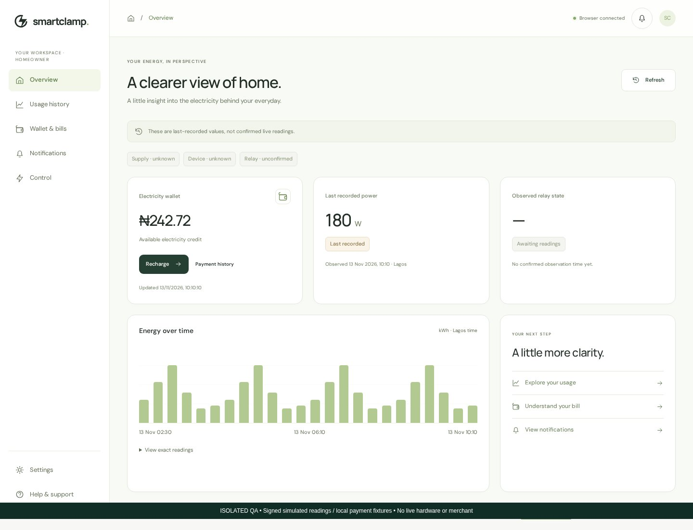
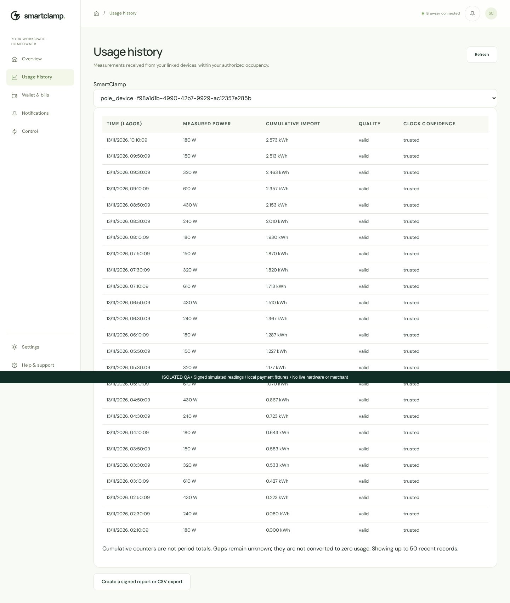
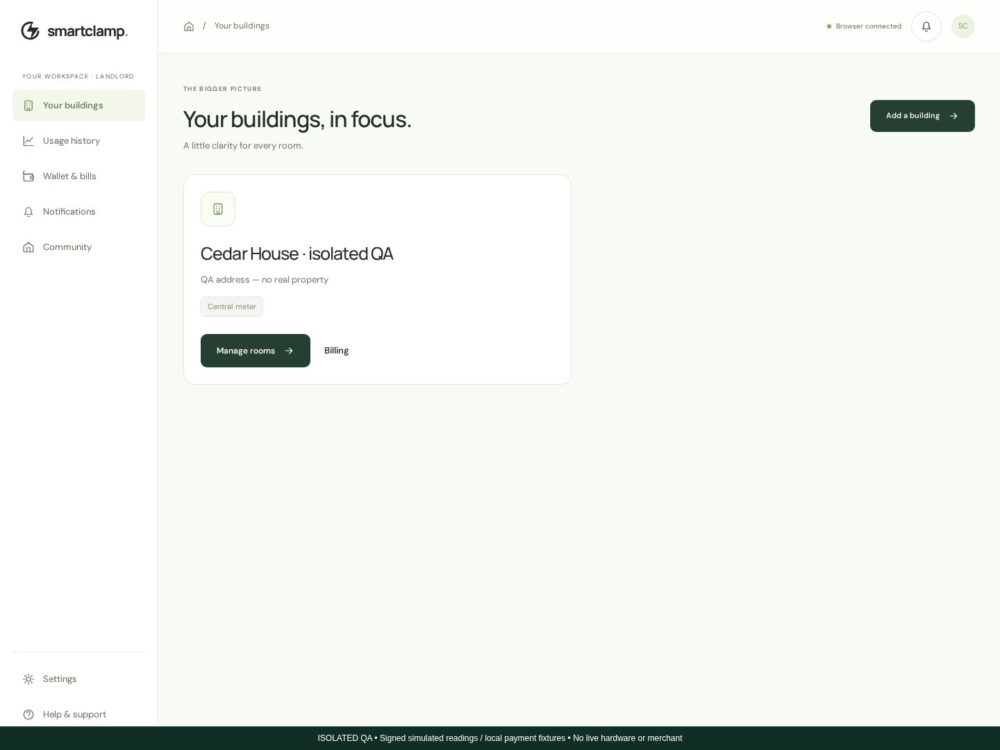
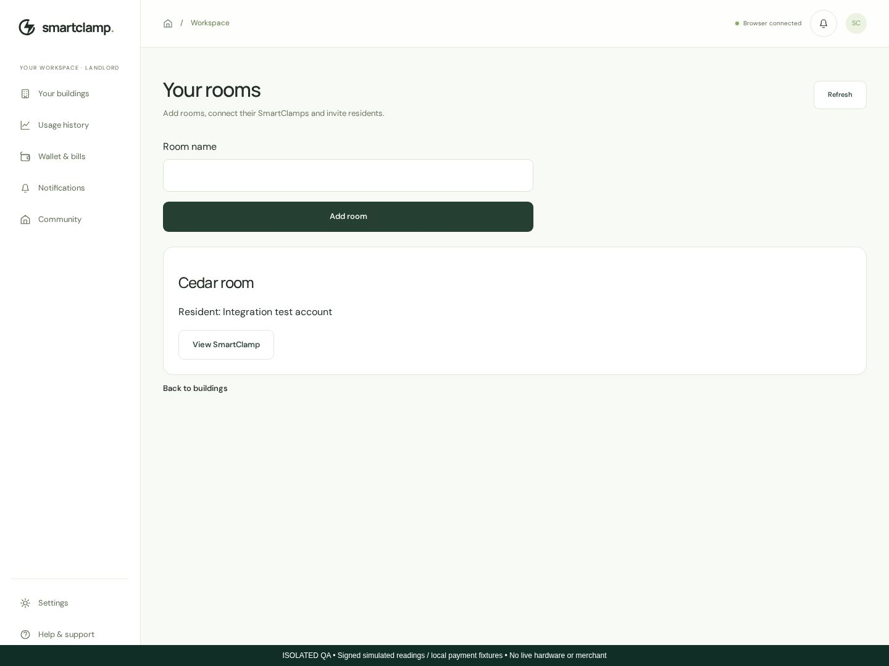
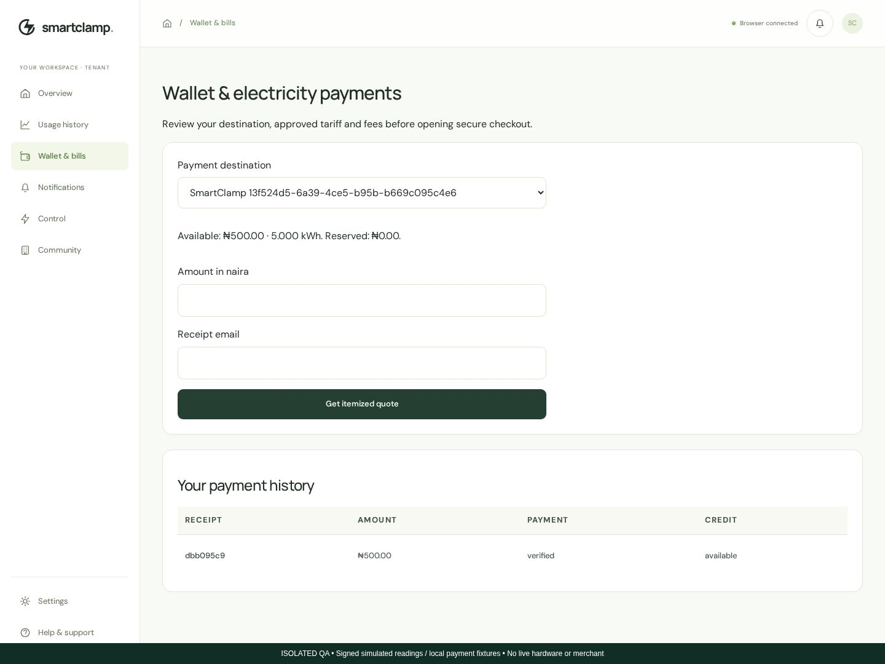
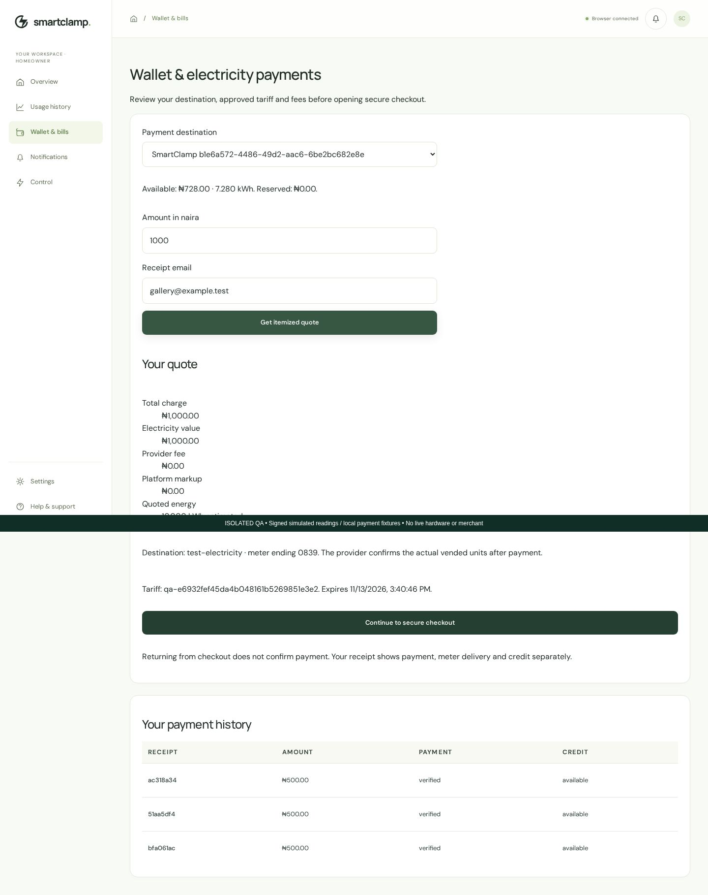
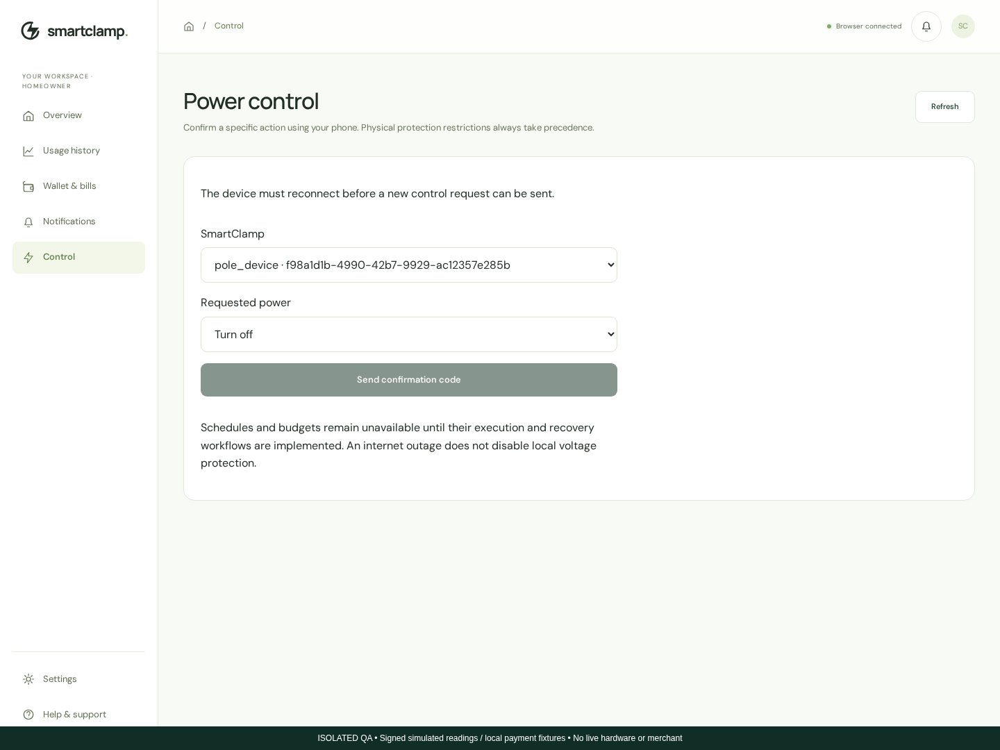

01. Home energy monitoring
Current power, supply present, device connectivity, electricity credit and usage chart. Readings are signed simulated QA telemetry.

02. Consumption history
Recorded usage over time. This is whole-device consumption, not appliance identification.

03. Landlord building overview
Actual building records and navigation into rooms. This does not demonstrate a multi-room energy comparison.

04. Room and SmartClamp linking
A linked resident and room device. The capture contains one populated room; a multi-room monitoring/distribution screen is not implemented.

05. Shared-housing resident wallet
A resident's own room wallet and central-meter payment destination. This is not a landlord transfer of units between residents.

06. Electricity recharge quote
An actual API quote with destination, amount and itemized fees, using a local provider fixture; no real money is charged.

07. Power-control request
The implemented control request and phone-confirmation form. No physical relay switching is demonstrated.
